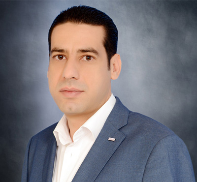
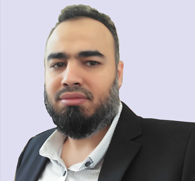

Takamul Senior Staff
Takamul Senior Staff
-
MOTASEM AL YACOUB
Sr. Project Manager
Motasem has joined Takamul in 2015. He has over 20 years of extensive experience in Construction and Project Management of various types of projects. He managed several medium-to-large scale projects from inception till completion and close-out. Motasem has worked for prominent engineering and contracting firms in Jordan, UAE, Bahrain and Saudi Arabia. He has strong leadership skills and committed to applying project management practices to meet project constraints (time, cost and quality). Also, he is a PMP certified professional since 2011. Motasem has a Bachelor’s Degree in Civil Engineering from the University of Jordan.
-

SAMI HAMED
Contracts Manager
Sami has joined Takamul in 2012. He is a contracts specialist with around (25) years of extensive experience administrating multi-million-dollar contacts, dealing with government and private sector EPC and various types of contracts. He has worked for prominent companies such as Hanmi-Parsons International, Saudi Binladin Group, Shell Canada among others. Moreover, Sami has a background in a wide range of industries, including construction, consultancy, commercial and service industries. He is well exposed to business development, organization and operation. Sami has a Bachelor’s Degree in Business Administration from the American University of Beirut.
-

AKRAM MOHAMMAD AL-TAWARAH
Biomedical Engineering Manager
Akram is a professional biomedical engineer with over 24 years’ experience. He is knowledgeable in the management and commissioning of Healthcare projects. He is also expert in setting requirements and specifications, planning and evaluation of tenders for the procurement of medical equipment. Akram is adept in maintenance management of medical equipment. He is skilled in quality and service management of hospital biomedical workshops. Moreover, he is a trainer in the field of Bio-medical engineering. Akram has successfully participated in the execution and operation of several hospital projects in Jordan and Iraq. He has a B.Sc. in Biomedical Engineering from Yarmouk University in Jordan.
-

AHMED ALI MUSTAFA
Head, MEP Engineering
Ahmed has more than 14 years of experience in the design and construction of MEP (Mechanical, Electrical & Plumbing) works in addition to specialized systems in the healthcare field. He managed projects from the conceptual design stage till completion of commissioning and operation. He has a vast knowledge of International standards applicable to MEP scope of works. Ahmed has profound experience especially in Hospital projects in addition to housing, hospitality and other types of projects. Before joining Takamul in 2016, he worked for Parsons and other well-known consultants and contractors. He holds a Bachelor’s of Science in Power & Mechanical Engineering, from Tanta University, Egypt.
-

AHMED ABD ELBARY
Head, Healthcare Planning & Design
Ahmed is a highly experienced professional who combines strong technical, problem solving and managerial capabilities to successfully deliver projects on time and on budget. He has over 12 years of career experience especially in planning and design of healthcare projects. Also, he is a lead in coordination and development of high-end and complex projects. Before joining Takamul in 2017, Ahmed has worked for some well-known consultancy firms and participated in the design of several Hospital projects in the Saudi Arabia and other countries. He holds a Bachelor’s degree in Architecture & Urban Planning from Suez Canal University in Egypt.
© 2018 Takamul Project Management Co. All Rights Reserved.